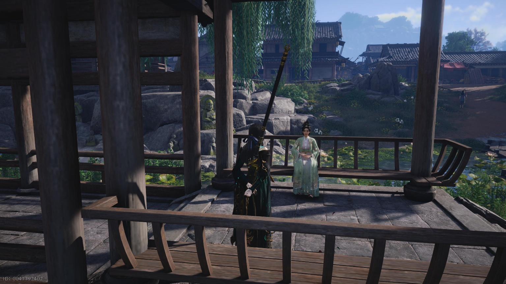
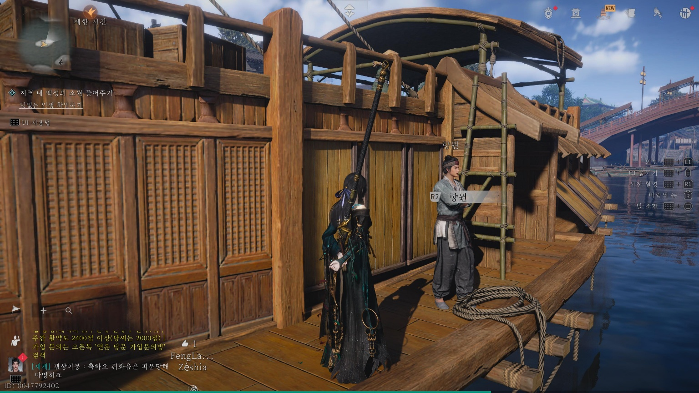
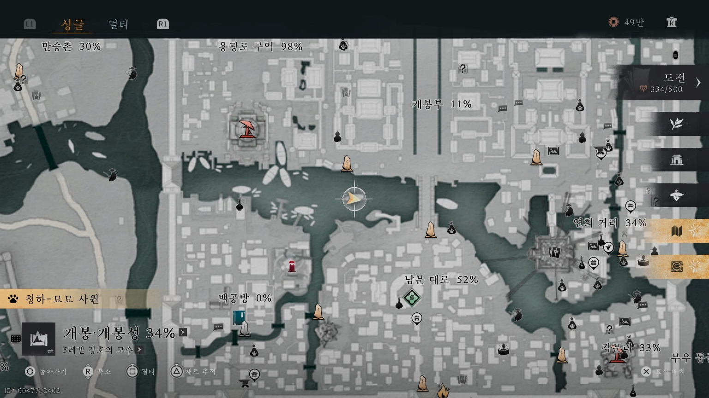
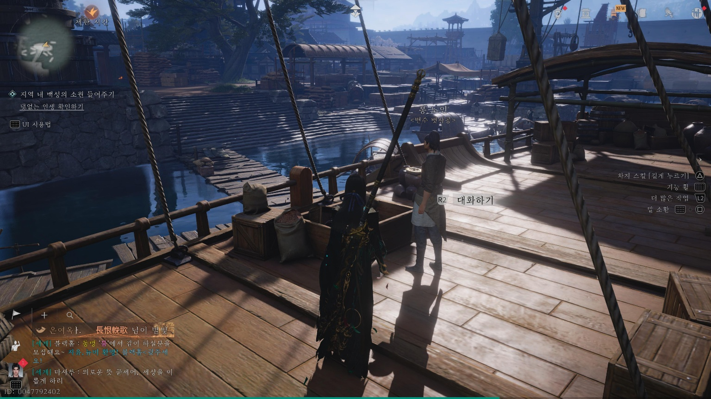
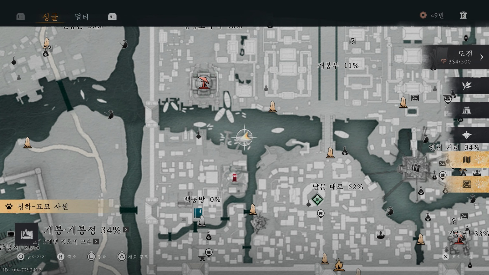

만사록
세월의 진실
송평교 서쪽 정자 온이씨의 부탁
📜 퀘스트 개요
송평교 서쪽 정자에 있는 온이씨를 만나, 사라진 남편의 행방을 찾기 위해 주변 배들을 수소문하는 의뢰입니다.
온이씨와 대화
아래 지도에 표시된 송평교 서쪽 정자로 이동하여 온이씨와 대화하세요.
그녀는 남편을 찾아달라고 부탁합니다.


향원과 대화
온이씨가 있는 곳 바로 옆 배 위로 올라가세요.
그곳에 있는 향원과 대화합니다.


봉 노인과 대화 및 완료
다음 배로 넘어가 봉 노인과 대화하세요.
대화를 마친 뒤 다시 온이씨에게 돌아가 보고하면 퀘스트가 완료됩니다.

